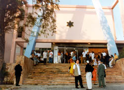
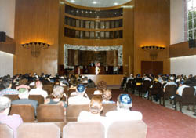
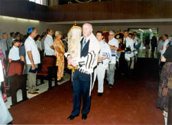
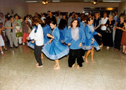

| 
HAVANA – Many of those in Havana's main synagogue had traveled
for hours to get there. In crowded buses the Cubans came
from Santiago, Camaguey and Santa Clara. In small charter
planes Americans flew in from Baltimore, New York and Washington.
From Chile, Argentina, and Mexico, Latin American Jewish
leaders had also come. As they all witnessed the torahs
being brought into Havana's newly renovated Patronato synagogue,
there were tears of joy and many smiles. For many years,
this moment had only been a dream. A dream that has now
come true.
Dr. Jose Miller, long-time leader of Cuba's Jewish community,
stood proudly at the refurbished pulpit as he addressed
the many Cuban, Latin American and North American Jewish
leaders who had made their way to Havana for the rededication
ceremony. "My friends, this synagogue and community center
were first opened in 1953. Much has happened since then.
This day, represents a new beginning for the Patronato.
Today, we celebrate not only the renovation of a building,
but the revival of a community. We are so happy to share
this new beginning with our Jewish brothers and sisters
everywhere."

The rededication of the synagogue and community center
is being recognized as a milestone in the Jewish history
of Cuba – a Jewish history that is both rich and largely
unknown in the West.
Adele Dworin, the unofficial historian of Havana's Jewish
community could not stop smiling. "When I was a little girl
here in Havana, there was a strong Jewish community. Then,
it all stopped, almost completely. Ten years ago, I was
the youngest person working in the Patronato – and I was
not young. Today," she giggles, "I am one of the oldest.
So many young people are coming back. Isn't that wonderful?"
At one time, Cuba's Jewish community was the most prosperous
in the Latin American world. Cuba played host to a large
number of Jewish Americans who visited the island regularly
and even formed burial societies with plots secured in Havana's
Jewish cemetery.
Things changed overnight during the 1959 Revolution, as
almost 90% of Cuban Jewry fled their homeland. The overwhelming
majority of Cuban Jews who remained assimilated almost totally.
In 1992, in the wake of the disintegration of the Soviet
Union, the Communist Congress of Cuba announced that Cubans
could be religiously involved and still remain members in
good standing of the Communist party. Eliminating the stigma
of visible religious identification and expression was a
crucial element in creating an environment hospitable to
Jewish renewal.

Ivan Glait, JDC's Program Manager in Cuba, recalls with
a smile, what it was like for those Jews who practiced their
religion throughout. "When they had seven people and three
torahs in a room, this was recognized as a ‘Cuban minyan!'"
Glait and his wife Cynthia are responsible for overseeing
the activities of every Jewish community in Cuba. He says
the hard work of the communities across the island is producing
results. "Big moments like this rededication are wonderful,"
he said. "Another big moment will come this summer when
a young Jewish couple will become the first to be married
in the newly refurbished Patronato. They met through Jewish
community service at the synagogue. Now they will be married
here."
The road to revival has not been easy. Even though the
opportunity for revival had been created, the Jews of Cuba
had undergone two generations of cultural amnesia. Little
knowledge or resources necessary for rebuilding Jewish life
existed, on either the individual or communal level.
Dr. Miller reached out to the JDC in 1992 and asked for
help in nurturing the spark of Jewish life that the few
had kept alive. JDC enriched the Passover packages that
were being allowed into Cuba as religious relief. The packages,
sent from the offices of the Canadian Jewish Congress, contained
matzot and other Passover items. Soon after, JDC began sending
in shipments of pharmaceuticals. At this point, a free pharmacy
opened in the Patronato. Jewish doctors started dispensing
medicines to anyone who came in with a verifiable medical
need. With this program and others like it, the pulse of
the Patronato began beating stronger, once more.
As they began returning, the Jews of Havana found that years
of neglect had taken their toll on the Patronato. The elaborate
woodwork of the main sanctuary had become riddled with termites.
The roof consisted of a series of leaks and open holes. Birds
nested in the rafters. All in all, it was a scene of abandonment.
And yet, amidst the disrepair, the soul of the community shone
brightly. Women's groups met in one corner of a large room,
children's classes in the other, and the choir practiced prayers
in the hallways. Argentinian Rabbi Shmuel Szteinhendler, who
attended the rededication ceremony, remembers visiting Cuba
regularly in the early 1990's to teach Jewish studies and
lead the congregation in prayers. Even then, he said, the
spirit of the Cuban Jews was strong. "When I first arrived
I saw a homemade poster which read, ‘Am Yisrael B'Cuba
Chai!' [Long Live the Jewish Community of Cuba.!] I said
to myself, this is my mission in Cuba. To help make this come
true."
During
the eight years since 1992, synagogues and community centers
have been opened in towns across Cuba. A tide of cultural
identification has been re-established, and Cuba is taking
its rightful place among the Latin American Jewish community.
Each summer, a Jewish youth camp hosted in Cuba attracts
children from all over Central and South America. This summer,
for the first time, Jewish children from the United States
will also attend. As a community, Cuba's Jews now participate
in a wide array of social service volunteer programs through
their synagogues, including helping the elderly, providing
supplemental medical care, teaching Hebrew and Jewish culture
and offering Sabbath dinners.
"When I come back to my home community," Rabbi Szteinhendler
remarked, "I see how we struggle to keep people from leaving
the Jewish community. Here, in Cuba, they are struggling
to join the Jewish community. What has happened here is
a mitzvah. And you know, all of us who have helped
should really thank the Cuban Jews for allowing us to perform
this mitzvah. Because a mitzvah is a blessing
for those who perform it."
At the start of the rededication ceremony, Dr. Miller nailed
the mezuzah to the synagogue doorpost and recited the prayer.
Then, as the people filed into the sanctuary for services,
a parade of hands, young and old, reached out and touched
the soft dark wood of the mezuzah, a symbol of their
common past and the future they are building together.
|